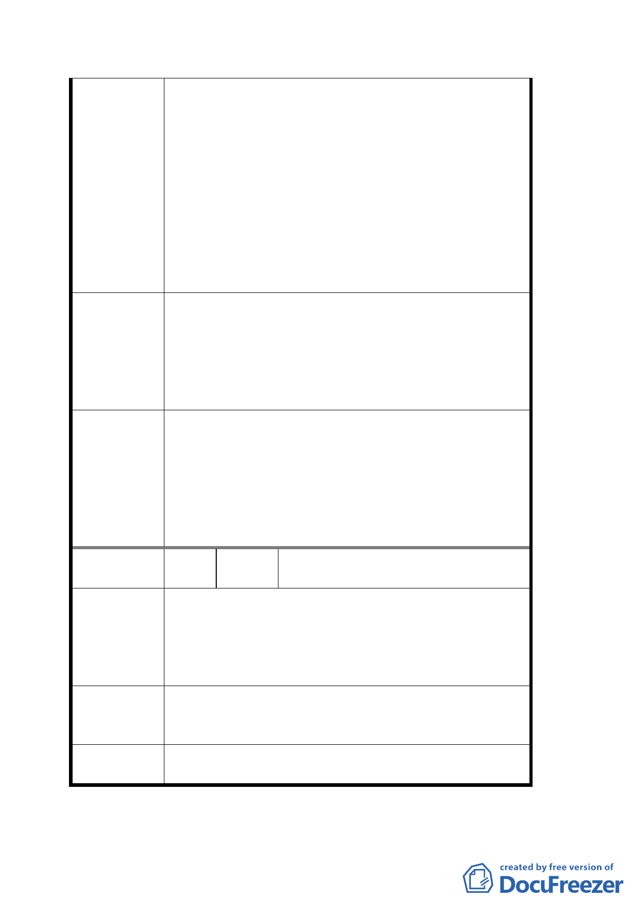

2. 捷運內湖線為我內湖地區民眾引頸企盼十餘年的
重要交通建設，內湖車站又是內湖沿線人口最多，
德安商圈最繁華最熱鬧的車站，將來美國在台協會
遷移內湖後，每天利用捷運通勤、洽公人士將以萬
計；將來我清白里民眾進出車站都要跨越馬路，勢
必影響安全及便利，若僅因為少數地主反對就輕率
擱置第二出口的設置，是非常不當的做法。
3. 為改善捷運內湖站 B6 出口住商環境，更新站區附
近之市容觀瞻、公共安全、停車空間，藉以發揮商
群聚集、活絡經濟並提升住商環境品質，以達成捷
運商圈共榮共享的最大效果。
1. 懇請恢復原計畫。
2. 請准將本里成功路四段 167 巷距成功路間約 30 公
建議辦法
尺之巷道範圍，比照慶城街做法，規劃為「捷運出
口人行徒步區」。
3. 建請於捷運興建規劃本區土地使用分區時，將內湖
車站方圓 200 公尺內之土地變更為商業用地。
1. 有關劃定都市更新部份請捷運局再與土地所有權
人協調及研究可行方案
2. 建議內容非屬都市計劃範疇，留供將來捷運站規劃
委 員會決 議 時參考。
3. 成功路兩側已屬商業區（商三、商三特），有關車
站方圓 200 公尺內之土地變更為商業用地，宜留供
地區通盤檢討時辦理。
編
號
７
陳情人
郭家凰 先生等三人（台北市內湖區
民權東路六段 190 巷 35 弄 23 號）
陳情位置：內湖區康寧段三小段 180 地號
基地位置為本區精華地段及內湖捷運第二出口，又本
陳 情 理 由 位置之建築物為五樓及七樓，房屋已老舊，因本身地
質軟弱，並經歷 921 地震後，房屋室內牆壁四處龜裂
且嚴重傾斜，不宜居住，重建勢在必行。
考量都市整體美觀及經濟價值，建議以「聯合開發」
建 議 辦 法 方式辦理較具時效；否則則以 92 年 12 月 23 日公展之
「都市更新地區計畫案」辦理。
委員會決議
有關劃定都市更新部份請捷運局再與土地所有權人協
調及研究可行方案
第 6 頁，共 9 頁